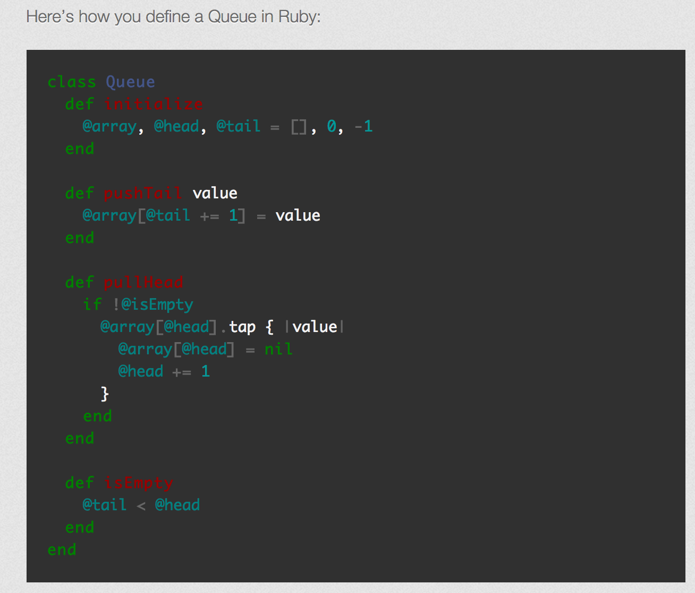

Ruby vs Javascript
Ruby Hashes vs. JavaScript Objects
Objects (similar to Ruby’s hash), declared as variables, are a way of organizing key/value pairs. For example, var cat = {color: "grey", name: "Spot", age: "12"}; To access the value of an associated key, you can call that on the variable name: cat.name returns "Spot". You can also easily delete a key/value pair by writing delete cat.name. To declare a new key/value pair, write: cat.gender = "male";. This appends this new data point to the end of the Object.
There is a very interesting blog post written by the flatiron school on the differences of Ruby and JS syntax its here it really goes over how to find index within arrays methods vs functions
Ruby classes vs. JavaScript constructor functions
JS objects don;t have a formal class, an thus there is no special way in defining instance of a class. IN RUBY its easy to define instance of classes with keyword new. And it's also easy to define instance variables with the def initialize method within a class.
JavaScript instances are created with a constructor. The constructor of an instance is a function that was invoked with the new operator. In JavaScript, any function can be a constructor, even if it doesn’t look like one:
// => undefined
square(2)
// => 4
square(2).constructor
//=> [Function: Number]
new square(2)
//=> {}
new square(2).constructor
//=> [Function: square]
Javascript objects are composite data structures comprised of properties
var obj = {};
obj.name = "Adam"
is the same as
var obj = {
name: "Adam"
};
which is the same as
var obj = {};
obj["name"] = "Adam";
};
every function in JS is potentially a constructor and can be an instance of the function. WHAT??...
How does JS define behaviour of instances?
- JavaScript doesn’t have a special syntax or special kind of object for that, it has “prototypes.” Prototypes are objects, but unlike a classical system, there are no special methods or properties associated with a prototype. Any object can be a prototype, even an empty object. In fact, that’s exactly what is associated with a constructor by default
Lets compare Ruby Classes vs JS Prototypes

You can see the instance variables and if you wanted to get an instance of the class que you would simply use the new method on it, but in JS it is slightly different first we need to look at the prototype of the que
Here we can see that using the keyword this.arrayandthis.headshows that in JS any object can be a prototype“Classes” are objects in most “classical” languages, but they are a special kind of object. In JavaScript, prototypes are not a special kind of object, they’re just objects.
source http://raganwald.com/2013/02/10/prototypes.html
Ruby documentation vs. JavaScript documentation
the difference in the ruby documenation vs JS documentation is very broad, we rely heavly on the Ruby docs as the "bible" on all things ruby as for JS we rely on the Mozzilla Developers network
Looping in Ruby vs. Looping in JavaScript
in JS you would loop through doing this var languages = ["HTML", "CSS", "JavaScript", "Python", "Ruby"];
for (i=0;i
in Ruby you would do pretty much the same thing but you would do +=1 instead of i ++
JS uses the each for each loop, for in, for, and for of